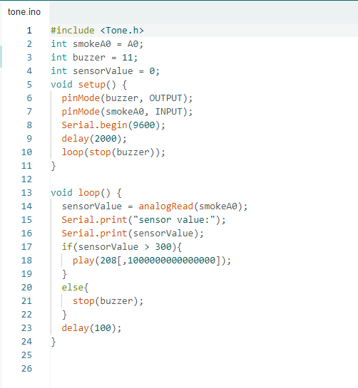
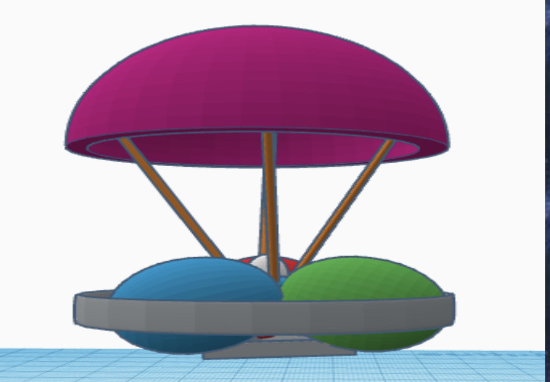
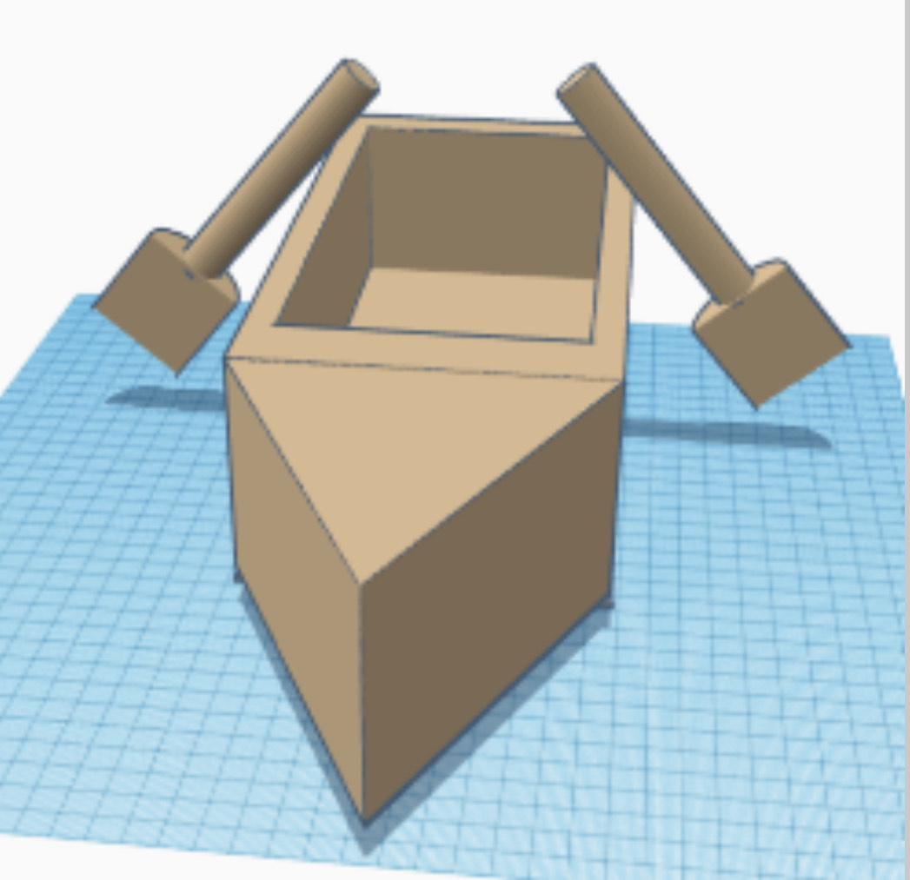

Engineering Journal:
9/2/2022-Today we were doing tinker cad. It was really fun and enojyable and opened up a new side of computer for me. We are also posting our websites to a google doc and I think that this class is going to be very intresting and I am excited for the classes ahead.
9/16/2022- Today we built paper boats and put them in water with a certain amount of weight to see if it could hold for five minutes. It was intresting to see the different types of models and builds that were presented and was a nice way to spend time outside as class to creat bonds and friendships.
9/23/2022- Today we finally tested our builds in class. Ours turned out succesful and it was fun seeing other projects and their results. I was able to use critical thinking skills with peers to create the amazing project.
9/30/2022- Today we were able to disect a computer and see the various parts inside of the computer. It is a intresting expirience seeing the inner parts of a computer and it helps further understand how it functions and it was a lot of fun. Doing this with my groupmates allowed to us to bond even more and it was a enjoyable expirience.
10/4/022- Today we were building prostetics for animals on TinkerCad for animals. Today I decided to build a prostetic for a parrot and made a prostetic wing. It was cool and exciting to know and understand that prostetics can be used for many uses and not just human parts
10/7/2022- Today we were doing a expiriment with a peanut butter and jelly sandwhich. We followed exact instrucitons on how to make a peanut butter sandwhich and turned into a mess. A lesson taught to us today with this expiriment was that with computer, instructions must be accurate and exact for it to work and make sense. It was a fun to look at computer science in a different way.
10/13/2022- Today we decided to go outside and throw paper airplanes from the 3rd story to see who can throw their paper airplane closest to the basket. There were many attempts but none were succesful. This shows how without any electrical or mechanical components for a certain object in air, it is very hard to accurately land in on something.
10/21/2022- Today we made the decision to go outside to test our rockets. It was intresting to see all the intresting models and shapes the rockets were that were created by others. As the rockets started to get launched, it was dissapointing to see that most of the rockets actually failed. Our rocket also didn't launch. There were many malfunctions and it was a bit dissapointing. Despite this, it was fun trying diffrent things.
10/27/2022- Today we decided to go towards the environmental engineering route. Today we built a water purifier with sand, rocks, pebbles, and cotton balls in a bottle. It was intresting to see the different results and it was a fun little expiriment.
11/04/2022- Today we played around with tinker cad where we played around with circuit designs. It was intresting to see so many different things you can do with circuits and it opened another world I have never seen before. Overall it was a fun expirience with me and my friends to expirement around.
11/10/2022-Today we did a project. Today we did a would you rather question and it was quite interesting. Instead of choosing what would be more benefitial in the future, we had to think more objectively like a computer. It helped me realize how the everything that the computeral takes is literal and it helps me understand how a computer works even more.
11/18/2022-Today we did a friday activity to see whether or not there were more doors or wheels at school. At first everyone thought there would be more doors because of lockers but it was shocking to see the end results. We summed up all of the wheels and there were much more wheels than lockers. This showed us how if we look at little details, things could be different.
12/02/2022-Today we were making our noodle bridge for our final project. It was intresting to see the different methods of making the bridges from other people and it was a intresting expirience. Overall, today was a chill and nice class session where we used our innovative ideas.
12/20/2022-Today we did our finals on our noodle bridge. Our first bride got destroyed while taking the bridge off the board, so we put a tape under the bridge so it comes out easily and we put lots of glue to mae the bridge more flexible to bend and holds the weight of the water. Although our bridge turned out fine, it pretty much turned into a glue bridge. Finally with one more test, our third bridge turned out to be a beautiful masterpiece. That was a joke. It turned out even more monstostrous than our previous bridge and turned into a puddle of glue. Overall this was a really fun expirience.
1/13/2023-This week we learned about buisness engineering. We learned that there are various jobs that require both engineering and buisness. Today we had to make buisness proposals on products. For our product we made a facial recognition securit camera (FRISC) with features and fatial recognition.
1/20/2023-This week we learned about chemical engineer. We learned about how chemical engineers work on scaling up chemical processes and engineering the machines to produce chemicals, such as medicines, beers, etcetera, whereas chemists work on creating the actual chemical reactions. For our project, we created a Non-newtonian fluid made from water and cornstarch it was a overall fun experience.
1/27/2023-For this week, we planned on making our second semester engineering project. In this project, we combine all of our engineering knowledge into one project. For our project, we have decided that we would be doing campus research project. I hope our project will go great.
2/3/2023-This week, we were cadding our research project. We decided to make a smoke detector specifically for vapes in the school. Our cadding turned out great and I can´t wait to see the final product.
2/10/2023-This week we did an intresting project. We hung a water balloon on a meterstick using rubber bands and popsicle sticks. It was intresting to see all the combinations and ways people used these sticks. It was fun to see everyone run and it was a overall fun day.
2/17/2023-This week we were still planning on how we were going to develop our project and we ordered parts. It was cool seeing everyones projects being formed .
2/24/2023-This week, we continued to work on our project. We were able to order our parts for the smoke detector and we have completed our slides. It has been intresting watching our project and other projects develop and become a whole project. Can't wait to see results.
3/3/2023-This week, we were able to finalize our project and it was amazing to see all of the results. We were able to code everything properly and a proper case was made. It was amazing to see how with time, great things can be made and it was a very fun expirience going through this project and I hope that in the future we could do something like this again. It was also amazing to see everyones hard work and effort and I am very proud of everyone in the class. Here are some results: 
3/24/2023-This week we had a project where we dropped an egg towards the floor and we had to protect it. It was intresting to see all the cool designs that people were formualting. Here is an image: 
3/31/2023-Today was testing day for our egg drop project. We dropped it from the 3rd floor story and our egg or the balloons popped which made our project succesful. There were many projects that used similar strategies like ours.
4/7/2023-Today our final project was announced. The project is about bulding a boat that can fit two people that can survive goin g through the whole pool without it sinking. Today we started developing our cad project for our boat and we decided to make mutliple designs but we chose the safest looking one. Here is the one we decided on: 
4/14/2023-Although we began cutting the cardboard, we did not have tape yet to form our boat. We began the basic layout while cutting the pieces required to begin creating the boat.
4/21/2023-Although we were going to begin the basics tructure design for our boat, we sadly had to wait due to open house and decded to do it next week.
4/28/2023-This week we were finally able to begin the construction of the boat. We had begun taping things and we started to create our paddles. We changed the design multiple times because of the amount of force needed to push a stick and paddle.
5/5/2023-This week we were layering the entire floor of the boat with ducktape but we eventually ran out so we couldn't completely finish the boat. We finished the boat on tuesday and for the rest of the time we just hung out and made sure that our boat was good for the final event.
5/12/2023-This week we were completely finsihed with our project. We were able to finish so quickly that we basically did nothing this entire week. We just watched people finsihing up their boats and we planned on how and who was going to get on the boat.